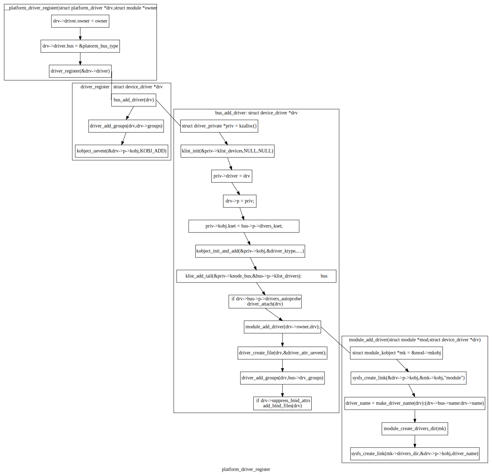
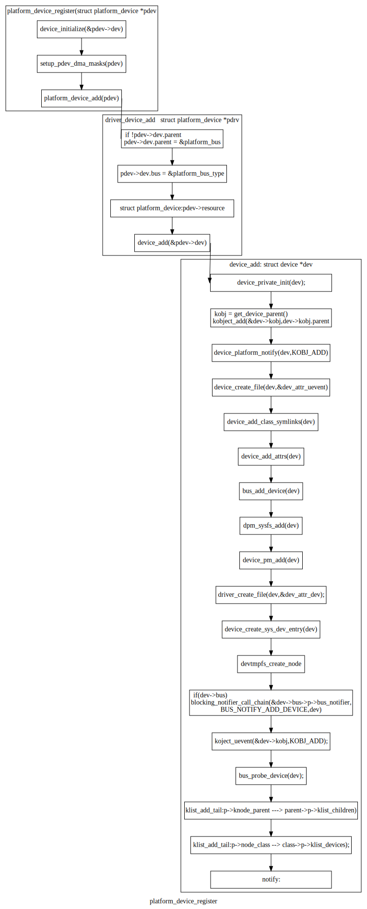

设备驱动¶
linux设备架构：¶
驱动的绑定¶
驱动绑定：设备与控制它的设备驱动程序相关联的过程。绑定动作一般由总线驱动来实现。
总线：总线类型的结构包含系统中总线类型相同的设备列表，当调用device_register时将设备数据插入这个列表。总线结构中还包含一个驱动程序列表，当驱动程序调用driver_register函数时，将驱动插入驱动程序类表末尾，这两种事件会触发设备与驱动程序的绑定： - device_register:查找匹配的驱动，通过设备ID进行匹配。这个ID的格式和语义依赖总线进行实现。由总线驱动程序提供回调函数实现ID的匹配比较，成功返回1,否则为0：int match(struct device * dev, struct device_driver * drv);如果找到了匹配的设备驱动，将 设备的驱动指针只想匹配的驱动结构，并调用驱动程序的probe回调函数。驱动程序对硬件状态进行检查，并对其工作状态进行初始化。 - driver_register原理同上。
设备类：完成探测后设备注册所属的类。设备驱动只能属于一个类，在驱动结构的devclass中进行设置。在执行类中的register_dev回调函数时调用devclass_add_device来枚举类中的设备，并最终将设备注册为某个类。
驱动：当一个驱动匹配到一个设备，设备的结构会插入到驱动结构中的设备列表中。一个设备只能有一个驱动程序，如果已经匹配了要跳过。
sysfs文件：在总线的“设备”目录中创建一个符号链接，该链接指向物理层次结构中的设备目录。在驱动程序的“设备”目录中创建了一个符号链接，该链接指向物理层次结构中的设备目录。设备的目录在类的目录中创建。在该目录中创建一个符号链接，指向设备在 sysfs 树中的物理位置。可以在设备的物理目录中创建指向其类目录或类的顶级目录的符号链接（尽管这还没有完成）。也可以创建一个指向其驱动程序的目录。
移除： - 当设备移除时，对应引用数会变成0。当引用计数为0时，驱动调用remove回调函数。将设备结构从驱动结构的设备列表中去除，并将驱动的应用计数减1.同时删除两者之间的符号链接。 - 当驱动移除时，将对驱动结构的设备列表进行迭代处理，并针对每个设备调用驱动程序的remove回调函数。将设备结构从驱动结构的设备列表中删除并删除两者间的符号文件。
总线类型¶
内核为每类如PCI,USB等设备声明一个静态的总线类型的对象。必须指定名字，可选择性初始化其match回调函数。
1 2 3 4 5 6 | struct bus_type pci_bus_type = {
.name = "pci",
.match = pci_bus_match,
};
extern struct bus_type pci_bus_type;作为全局变量包含在头文件中，供驱动程序使用。
|
注册：总线驱动初始化时，调用bus_register来初始化总线对象中的剩余域并将总线对象插入总线类型的全局列表中（struct bus_type的结构列表）。总线对象注册后，总线驱动就可以使用其中的字段。
回调：match:匹配驱动程序和设备。匹配引用的ID结构特定于总线实现。驱动程序通常会生命它们支持的设备的设备ID组，并保存在驱动结构中。
设备和驱动程序列表 ：分别是 struct devices 和 struct device_drivers 的列表。总线驱动可以自由使用这些列表。使用前可能主要转换为特定的类型（这句话不是很准确？）. 两种列表的迭代函数：（注意：需要确认函数名字？？？？？） - bus_for_each_dev 函数：
bus_for_each_dev 函数¶1 2 3
int bus_for_each_dev(struct bus_type * bus, struct device * start, void * data, int (*fn)(struct device *, void *));
bus_for_each_drv函数：
bus_for_each_dev 函数¶1 2
int bus_for_each_drv(struct bus_type * bus, struct device_driver * start, void * data, int (*fn)(struct device_driver *, void *));
这两个函数遍历相应的列表，并为列表中的每个设备或驱动程序调用回调。所有列表访问都是通过获取总线的锁（当前读取）来同步的。列表中每个对象的引用计数在调用回调之前递增；在获得下一个对象后递减。调用回调时不持有锁。
sysfs
有一个名为“bus”的顶级目录。每条总线在总线目录中都有一个目录，以及两个默认目录：
1 2 3 | /sys/bus/pci/
|-- devices
`-- drivers
|
在总线上注册的驱动程序会在总线的驱动程序目录中获得一个目录：
1 2 3 4 5 6 7 | /sys/bus/pci/
|-- devices
`-- drivers
|-- Intel ICH
|-- Intel ICH Joystick
|-- agpgart
`-- e100
|
在该类型的总线上发现的每个设备都会在总线的设备目录中获得指向物理层次结构中设备目录的符号链接：
1 2 3 4 5 6 | /sys/bus/pci/
|-- devices
| |-- 00:00.0 -> ../../../root/pci0/00:00.0
| |-- 00:01.0 -> ../../../root/pci0/00:01.0
| `-- 00:02.0 -> ../../../root/pci0/00:02.0
`-- drivers
|
导出属性
1 2 3 4 5 | struct bus_attribute {
struct attribute attr;
ssize_t (*show)(struct bus_type *, char * buf);
ssize_t (*store)(struct bus_type *, const char * buf, size_t count);
};
|
总线驱动程序可以使用与设备的 DEVICE_ATTR_RW 宏类似的 BUS_ATTR_RW 宏导出属性。例如，这样的定义：
1 | static BUS_ATTR_RW(debug);等价于 static bus_attribute bus_attr_debug;
|
然后可以使用以下命令在总线的 sysfs 目录中添加和删除属性：
1 2 | int bus_create_file(struct bus_type *, struct bus_attribute *);
void bus_remove_file(struct bus_type *, struct bus_attribute *);
|
设备驱动程序设计模式¶
常见的设计模式
- 1.状态容器;
虽然内核包含一些设备驱动程序，它们假设它们只会在某个系统（单例）上被探测（）一次，但通常假设驱动程序绑定到的设备将出现在多个实例中。这意味着 probe() 函数和所有回调都需要可重入。最常见的实现方式是使用状态容器设计模式。它通常有这种形式：
1 2 3 4 5 6 7 8 9 10 11 12 13 | static irqreturn_t foo_handler(int irq, void *arg)
{
struct foo *foo = arg;
(...)
}
static int foo_probe(...)
{
struct foo *foo;
(...)
ret = request_irq(irq, foo_handler, 0, "foo", foo);
}
|
2.container_of();
添加一个卸载的工作：
1 2 3 4 5 6 7 8 9 10 11 12 13 14 15 16 17 18 19 20 21 22 23 24 25 26 27 28 29 30 | struct foo {
spinlock_t lock;
struct workqueue_struct *wq;
struct work_struct offload;
(...)
};
static void foo_work(struct work_struct *work)
{
struct foo *foo = container_of(work, struct foo, offload);
(...)
}
static irqreturn_t foo_handler(int irq, void *arg)
{
struct foo *foo = arg;
queue_work(foo->wq, &foo->offload);
(...)
}
static int foo_probe(...)
{
struct foo *foo;
foo->wq = create_singlethread_workqueue("foo-wq");
INIT_WORK(&foo->offload, foo_work);
(...)
}
|
对于 hrtimer 或类似的东西，设计模式是相同的，它们将返回一个参数，该参数是指向回调中结构成员的指针。
container_of() 是在 <linux/kernel.h> 中定义的宏,container_of() 所做的是使用标准 C 中的 offsetof() 宏通过简单的减法从指向成员的指针中获取指向包含结构的指针，这允许类似于面向对象的行为。请注意，包含的成员不能是指针，而是要使其正常工作的实际成员。避免了以这种方式使用指向 struct foo * 实例的全局指针，同时仍将传递给工作函数的参数数量保持为单个指针。
总结：
基本设备结构:struct device¶
编程接口： - int device_register(struct device * dev);执行这个函数时，总线驱动发现设备并将设备注册到核心 - 总线需要初始化以下域：
parent;
name;
bus_id;
bus;
当设备的引用计数变为 0 时，设备将从内核中移除。可以使用以下命令调整引用计数：
增加/减少设备引用计数¶1 2
struct device * get_device(struct device * dev); void put_device(struct device * dev);
get_device()如果引用还不是 0（如果它已经在被删除的过程中），将返回一个指向传递给它的struct device结构指针。 - 驱动可以通过以下方式访问设备结构中的锁：
访问结构中的锁¶1 2
void lock_device(struct device * dev); void unlock_device(struct device * dev);
属性：
属性结构¶1 2 3 4 5 6 7
struct device_attribute { struct attribute attr; ssize_t (*show)(struct device *dev, struct device_attribute *attr, char *buf); ssize_t (*store)(struct device *dev, struct device_attribute *attr, const char *buf, size_t count); };
设备的属性可以由设备驱动程序通过 sysfs 导出。
正如关于 kobjects、ksets 和 ktypes 的所有你不想知道的内容中所解释的，必须在生成 KOBJ_ADD uevent 之前创建设备属性。实现这一点的唯一方法是定义一个属性组。
使用名为 DEVICE_ATTR 的宏声明属性：
驱动组织框架
总线，设备和驱动间的关系图：

每个设备结构有指向设备驱动的指针，每个设备最多对应一个设备驱动；每个设备驱动结构中维护一个设备结构列表。采用struct klist结构表示列表，struct klist_node代表节点。
bus,struct device,device_driver与kset,kobject的组织

每个总线结构维护两个struct kset结构，分别为struct kset *devices_kset,struct kset *driver_kset;这两个结构将总线中的代表设备和设备驱动的struct kobject结构通过双向链表组织起来。
tree /sys/bus -L 2
系统中的总线¶1 2 3 4 5 6 7 8 9 10 11 12 13 14 15
/sys/bus ├── acpi │ ├── devices │ ├── drivers │ ├── drivers_autoprobe │ ├── drivers_probe │ └── uevent ...... ├── i2c │ ├── devices │ ├── drivers │ ├── drivers_autoprobe │ ├── drivers_probe │ └── uevent ......
我们分析属性：
static BUS_ATTR_WO(drivers_probe); static BUS_ATTR_RW(drivers_autoprobe);
bus_register函数中创建：
bus_register函数¶1 2 3 4 5 6 7 8 9 10 11 12 13 14 15 16 17 18 19 20 21
/** * bus_register - register a driver-core subsystem * @bus: bus to register * * Once we have that, we register the bus with the kobject * infrastructure, then register the children subsystems it has: * the devices and drivers that belong to the subsystem. */ int bus_register(struct bus_type *bus): retval = kobject_set_name(&priv->subsys.kobj, "%s", bus->name); // /sys/bus/i2c priv->devices_kset = kset_create_and_add("devices", NULL, &priv->subsys.kobj); // /sys/bus/i2c/devices priv->drivers_kset = kset_create_and_add("drivers", NULL, &priv->subsys.kobj); // /sys/bus/i2c/drivers retval = bus_create_file(bus, &bus_attr_uevent); // /sys/bus/i2c/uevent： retval = add_probe_files(bus); |----retval = bus_create_file(bus, &bus_attr_drivers_probe); // /sys/bus/i2c/drivers_autoprobe: 1：自动适配； |----retval = bus_create_file(bus, &bus_attr_drivers_autoprobe); // /sys/bus/i2c/drivers_probe: 设备名称，为设备重新匹配设备驱动；
drivers_autoprobe/drivers_probe具体实现原理¶1 2 3 4 5 6 7 8 9 10 11 12 13 14 15 16 17 18 19 20 21 22 23 24
static ssize_t drivers_autoprobe_store(struct bus_type *bus, const char *buf, size_t count) //设置变量 bus->p->drivers_autoprobe; { if (buf[0] == '0') bus->p->drivers_autoprobe = 0; else bus->p->drivers_autoprobe = 1;//如果为1,则在device_add()函数时运行device_initial_probe(dev)进行设备驱动匹配。进而调用__device_attach(dev,true); return count; } static ssize_t drivers_probe_store(struct bus_type *bus, const char *buf, size_t count)//根据输入的值进行遍历；并进行驱动匹配： { struct device *dev; int err = -EINVAL; dev = bus_find_device_by_name(bus, NULL, buf);//根据名字获取struct device结构 if (!dev) return -ENODEV; if (bus_rescan_devices_helper(dev, NULL) == 0)//如果设备没有匹配的设备驱动：dev->driver为空，并满足锁等要求，运行device_attach(dev)进行设备与设备驱动的匹配：遍历总线中的设备驱动列表，挨个与设备进行匹配。匹配到一个就返回：__device_attach; err = count; put_device(dev); return err; }
uevent 具体实现原理¶1 2 3 4 5 6 7 8 9 10 11 12 13 14 15 16 17 18 19 20 21 22 23 24 25 26 27 28 29 30 31 32 33 34 35 36 37 38 39 40 41 42 43 44 45 46 47 48 49 50 51 52 53 54 55 56 57 58 59 60 61 62 63 64 65 66 67 68 69 70 71 72 73 74 75 76 77 78 79 80 81 82 83 84 85 86 87 88 89 90 91
static ssize_t bus_uevent_store(struct bus_type *bus, const char *buf, size_t count) // /sys/bus/i2c/uevent { int rc; rc = kobject_synth_uevent(&bus->p->subsys.kobj, buf, count);//总线的kobj return rc ? rc : count; } /** * kobject_synth_uevent - send synthetic uevent with arguments * * @kobj: struct kobject for which synthetic uevent is to be generated * @buf: buffer containing action type and action args, newline is ignored * @count: length of buffer * * Returns 0 if kobject_synthetic_uevent() is completed with success or the * corresponding error when it fails. */ int kobject_synth_uevent(struct kobject *kobj, const char *buf, size_t count) { r = kobject_action_type(buf, count, &action, &action_args); //所以uevent取值范围为：static const char *kobject_actions; 。。。。。。 if (!action_args) { r = kobject_uevent_env(kobj, action, no_uuid_envp);//只加入了事件 goto out; } r = kobject_action_args(action_args, count - (action_args - buf), &env);//参数 。。。。。。 r = kobject_uevent_env(kobj, action, env->envp);//事件加参数 。。。。。。 } /** * kobject_uevent_env - send an uevent with environmental data * * @kobj: struct kobject that the action is happening to * @action: action that is happening * @envp_ext: pointer to environmental data * * Returns 0 if kobject_uevent_env() is completed with success or the * corresponding error when it fails. */ int kobject_uevent_env(struct kobject *kobj, enum kobject_action action, char *envp_ext[]) { ...... if (!top_kobj->kset) {//必须有对应的kset，否则就没法了 ...... return -EINVAL; } kset = top_kobj->kset; uevent_ops = kset->uevent_ops;//uevent_ops方法 /* skip the event, if uevent_suppress is set*/ if (kobj->uevent_suppress) { ...... return 0; } /* skip the event, if the filter returns zero. */ if (uevent_ops && uevent_ops->filter) if (!uevent_ops->filter(kset, kobj)) { ...... return 0; } /* originating subsystem */ if (uevent_ops && uevent_ops->name) subsystem = uevent_ops->name(kset, kobj);//uevent_ops的作用 else subsystem = kobject_name(&kset->kobj); ...... /* environment buffer */ 。。。。。。 /* let the kset specific function add its stuff */ if (uevent_ops && uevent_ops->uevent) { retval = uevent_ops->uevent(kset, kobj, env);//有就执行，返回非零就退出了，返回零则继续执行，这个可以作为全局的一个通知点。如驱动匹配等。kobj：代表本结构的对象 if(retval) goto exit; } ...... retval = kobject_uevent_net_broadcast(kobj, env, action_string,//uevent_net_broadcast_tagged->netlink_broadcast():发送 devpath); ...... }drivers_autoprobe 设置说明：如果为1,则在device_add()函数时运行device_initial_probe(dev)进行设备驱动匹配。进而调用__device_attach(dev,true);
drivers_probe 设置说明：设备名称（字符串），为设备重新匹配设备驱动；
uevent 设置说明：kobject_uevent_env(。。。)：发送事件。
kset/kobject/kref描述¶
kobject理解¶
内核对象的嵌入单元,主要应用在内核与用户空间信息的交互：
每个kobject对应一个sysfs目录，可用于导出对象信息； struct kobject {
- #ifdef CONFIG_DEBUG_KOBJECT_RELEASE
struct delayed_work release;
- #endif
unsigned int state_initialized:1; unsigned int state_in_sysfs:1; unsigned int state_add_uevent_sent:1; unsigned int state_remove_uevent_sent:1; unsigned int uevent_suppress:1;
};
- struct kobj_type {
void (release)(struct kobject *kobj); const struct sysfs_ops *sysfs_ops; struct attribute **default_attrs; / use default_groups instead */ const struct attribute_group **default_groups; const struct kobj_ns_type_operations *(*child_ns_type)(struct kobject *kobj); const void *(*namespace)(struct kobject *kobj); void (*get_ownership)(struct kobject *kobj, kuid_t *uid, kgid_t *gid);
};
以kset为单位提供uevent结构，实现异步通知。
- struct kset {
struct list_head list;//维护struct kobject的双向链表； spinlock_t list_lock; struct kobject kobj; const struct kset_uevent_ops *uevent_ops;
} __randomize_layout;
kset与kobject实现内核对象的分类组织。进一步将内核信息有组织地通过sysfs文件系统向用户空间进行呈现。
kset与子系统（subsystem：struct bus_type)对应；


uevent总结¶
一个kset通过内嵌的kset_uevent_ops结构来对与其相关的kobject的状态变化进行进一步处理。
filter函数允许kset阻止一个特定kobject的uevent被发送到用户空间。 如果该函数返回0，该uevent将不会被发送出去。
name函数将被调用用于覆盖uevent发送到用户空间的kset的默认名称。默认情况下，该名称将与kset本身相同。
当事件被发送至用户空间前，调用uevent函数来设置更多的环境变量。
相关状态：
1 2 3 4 5 6 7 8 9 10 11 12 13 14 15 16 17 18 19 20 21 22 23 | /* counter to tag the uevent, read only except for the kobject core */
extern u64 uevent_seqnum;
/*
* The actions here must match the index to the string array
* in lib/kobject_uevent.c
*
* Do not add new actions here without checking with the driver-core
* maintainers. Action strings are not meant to express subsystem
* or device specific properties. In most cases you want to send a
* kobject_uevent_env(kobj, KOBJ_CHANGE, env) with additional event
* specific variables added to the event environment.
*/
enum kobject_action {
KOBJ_ADD,
KOBJ_REMOVE,
KOBJ_CHANGE,
KOBJ_MOVE,
KOBJ_ONLINE,
KOBJ_OFFLINE,
KOBJ_BIND,
KOBJ_UNBIND,
};
|
通过调用kobject_uevent进行事件通知
1 2 3 4 5 6 7 8 9 10 11 12 13 | /**
* kobject_uevent - notify userspace by sending an uevent
*
* @kobj: struct kobject that the action is happening to
* @action: action that is happening
*
* Returns 0 if kobject_uevent() is completed with success or the
* corresponding error when it fails.
*/
int kobject_uevent(struct kobject *kobj, enum kobject_action action)
{
return kobject_uevent_env(kobj, action, NULL);
}
|
事件发送处理流程：

kobject_uevent函数流程图显示了其功能实现的底层逻辑。
kobject API总结¶
一个kset有以下功能:它像是一个包含一组对象(struct kobject)的袋子。一个kset可以被内核用来追踪“所有块设备”或“所有PCI设备驱动”,也可用于追踪某类内核时间状态变化。kset也是sysfs中的一个子目录，代表kset本身的kobject结构与对应的sysfs目录对应，kset对应的kobject它可以被设置为其他kobject的父对象，进而与kset包含的kobject形成一个数结构；sysfs层次结构的顶级目录就是以这种方式构建的。
Ksets通过uevent_ops成员实现kobjects的“热插拔”，将”热插拔”事件传递给用户空间，应用程序进行进一步的处理。
kset在一个标准的内核链表(list)中保存它的子对象(kobject)。Kobjects中的kset字段指向包含自身的kset。在几乎所有的情况下，属于一个kset的kobjects的父对象成员都指向kset内嵌的kobject。
由于kset中包含一个kobject，它应该总是被动态地创建，而不是静态地 或在堆栈中声明。要创建一个新的kset，请使用:
- struct kset *kset_create_and_add(const char *name,
const struct kset_uevent_ops *uevent_ops, struct kobject *parent_kobj);
当你完成对kset的处理后，调用:
void kset_unregister(struct kset *k);
来销毁它。这将从sysfs中删除该kset并递减其引用计数值。当引用计数 为零时,该kset将被释放。因为对该kset的其他引用可能仍然存在， 释放可能发生在kset_unregister()返回之后。
一个使用kset的例子可以在内核树中的 samples/kobject/kset-example.c 文件中看到。
kobject加入kset¶
有人可能会问，鉴于没有提出执行该功能的函数，究竟如何将一个kobject添加到一个kset中。答案是这个任务是由kobject_add()处理的。当一个 kobject被传递给kobject_add()时，它的kset成员应该指向这个kobject 所属的kset。 kobject_add()将处理剩下的部分。
如果属于一个kset的kobject没有父kobject集，它将被添加到kset的目录中。并非所有的kset成员都必须住在kset目录中。如果在添加kobject 之前分配了一个明确的父kobject，那么该kobject将被注册到kset中， 但是被添加到父kobject下面。
kobject 操作¶
通过kobject_add()注册了你的kobject，不要使用kfree()来直接释放它。用kobject_put()来释放。在kobject_init()后，通过调用kobject_put()来进行正确释放。具体操作通过调用kobject的release()方法完成的。release()存储在kobject内嵌的结构体kobj_type中；实际编程中通过调用内核库中封装的kobject函数对kobject等进行操作，不要采用自己定义接口进行处理。
具体API参考内核文档：https://www.kernel.org/doc/html/latest/core-api/kobject.html
内核示例程序¶
samples/kobject/{kobject-example.c,kset-example.c}
设备驱动¶
platform设备驱动¶
有关平台总线的驱动程序模型接口，请参见 <linux/platform_device.h>：platform_device 和 platform_driver。这种伪总线用于连接具有最少基础设施的总线上的设备，例如用于在许多片上系统处理器上集成外围设备的设备，或一些“传统”PC 互连；而不是像 PCI 或 USB 这样的大型总线指定的。
平台设备：平台设备是通常在系统中显示为自治实体的设备。这包括传统的基于端口的设备和外设总线的主机桥，以及集成到片上系统平台的大多数控制器。它们通常的共同点是从 CPU 总线直接寻址。极少情况下，platform_device 会通过其他某种总线的段连接；但它的寄存器仍然是可直接寻址的。平台设备有一个名称，用于驱动程序绑定，以及一个资源列表，例如地址和 IRQ：
1 2 3 4 5 6 7 | struct platform_device {
const char *name;
u32 id;
struct device dev;
u32 num_resources;
struct resource *resource;
};
|
平台驱动程序： 平台驱动程序遵循标准驱动程序模型约定，其中发现/枚举在驱动程序之外处理，并且驱动程序提供probe() 和remove() 方法。它们使用标准约定支持电源管理和关机通知：
设备枚举：通常，特定于平台（通常是特定于板）的设置代码将注册平台设备：
一般规则是只注册那些实际存在的设备，但在某些情况下可能会注册额外的设备。例如，内核可能被配置为与可能未安装在所有板上的外部网络适配器一起使用，或者同样与某些板可能无法连接到任何外围设备的集成控制器一起使用。在某些情况下，引导固件将导出描述在给定板上填充的设备的表。如果没有这些表，系统设置代码设置正确设备的唯一方法通常是为特定目标板构建内核。这种特定于板的内核在嵌入式和定制系统开发中很常见。
在许多情况下，与平台设备相关的内存和 IRQ 资源不足以让设备的驱动程序工作。板设置代码通常会使用设备的 platform_data 字段提供附加信息以保存附加信息。嵌入式系统经常需要一个或多个用于平台设备的时钟，这些时钟通常会保持关闭，直到它们被主动需要（以节省电力）。系统设置还将这些时钟与设备相关联，以便对 clk_get(&pdev->dev, clock_name) 的调用根据需要返回它们。
旧版驱动程序：设备探测
设备命名和驱动绑定
- platform_device.dev.bus_id 是设备的规范名称。它由两个组件构成：
platform_device.name …也用于驱动匹配。
platform_device.id … 设备实例编号，否则“-1”表示只有一个。
这些是串联的，所以name/id“serial”/0表示bus_id“serial.0”，“serial/3”表示bus_id“serial.3”；两者都将使用名为“serial”的平台驱动程序。而“my_rtc”/-1 将是 bus_id “my_rtc”（无实例 ID）并使用名为“my_rtc”的平台驱动程序。
驱动程序绑定由驱动程序核心自动执行，在找到设备和驱动程序之间的匹配后调用驱动程序探针（）。如果probe() 成功，则驱动程序和设备照常绑定。有三种不同的方法可以找到这样的匹配：
每当注册设备时，都会检查该总线的驱动程序是否匹配。平台设备应在系统引导期间尽早注册。
当使用 platform_driver_register() 注册驱动程序时，将检查该总线上的所有未绑定设备是否匹配。驱动程序通常在引导期间稍后注册，或者通过模块加载进行注册。
使用 platform_driver_probe() 注册驱动程序的工作方式与使用 platform_driver_register() 类似，但如果其他设备注册，则以后不会探测该驱动程序。（没关系，因为此接口仅适用于非热插拔设备。）
驱动注册：platform_driver_register(drv):__platform_driver_register(drv,THIS_MODULE);
设备注册：platform_device_register(struct platform_device *pdev);
代码流程更与上面描述的struct bus_type,strut device,struct device_driver三者之间的关系。
开源固件和设备树¶
ARM Device Tree起源于OpenFirmware (OF)，在过去的Linux中，arch/arm/plat-xxx和arch/arm/mach-xxx中充斥着大量的垃圾代码，相当多数的代码只是在描述板级细节，而这些板级细节对于内核来讲，不过是垃圾，如板上的platform设备、resource、i2c_board_info、spi_board_info以及各种硬件的platform_data。为了改变这种局面，Linux社区的大牛们参考了PowerPC等体系架构中使用的Flattened Device Tree（FDT），也采用了Device Tree结构，许多硬件的细节可以直接透过它传递给Linux，而不再需要在kernel中进行大量的冗余编码。
Device Tree是一种描述硬件的数据结构，由一系列被命名的结点（node）和属性（property）组成，而结点本身可包含子结点。所谓属性，其实就是成对出现的name和value。在Device Tree中，可描述的信息包括（原先这些信息大多被hard code到kernel中）：CPU的数量和类别，内存基地址和大小，总线和桥，外设连接，中断控制器和中断使用情况，GPIO控制器和GPIO使用情况，Clock控制器和Clock使用情况。 通常由.dts文件以文本方式对系统设备树进行描述，经过Device Tree Compiler(dtc)将dts文件转换成二进制文件binary device tree blob(dtb)，.dtb文件可由Linux内核解析，有了device tree就可以在不改动Linux内核的情况下，对不同的平台实现无差异的支持，只需更换相应的dts文件，即可满足，当然这样会增加内核的体积。 基本上，那些可以动态探测到的设备是不需要描述的， 例如USB device。不过对于SOC上的usb hostcontroller，它是无法动态识别的，需要在device tree中描述。同样的道理， 在computersystem中，PCI device可以被动态探测到，不需要在device tree中描述，但是PCI bridge如果不能被探测，那么就需要描述之。
设备树规范：¶
https://www.devicetree.org/specifications/
要理解的最重要的一点是，DT 只是一个描述硬件的数据结构。它没有什么神奇之处，它也不会神奇地让所有硬件配置问题都消失。它所做的是提供一种语言，用于将硬件配置与 Linux 内核（或任何其他操作系统）中的板卡和设备驱动程序支持分离。使用它可以让电路板和设备支持成为数据驱动的；根据传递到内核的数据而不是每台机器的硬编码选择来做出设置决策。
理想情况下，数据驱动的平台设置应该会减少代码重复，并更容易使用单个内核映像支持广泛的硬件。
Linux 将 DT 数据用于三个主要目的：
DTC的解析¶
dtc:device tree compiler:设备树编译器： dtc [options] <input file> dts:device tree source dtb:device tree blob
但是我还是简单说一下。。。dt主要由两种文件组成，分别是xx.dts和xx.dtsi，其中只有xx.dts文件才能生成对应的dtb/dtbo，dtsi文件是用来include的。 也就是说，一个dtb/dtbo文件中包含了
生成这个dtb/dtbo的dts文件内容 这个dts文件中include的dtsi文件内容 被include的dtsi文件中引用的其它dtsi文件内容 至于这里的include(引用)，其实在生成dtb时你可以简单的理解为复制粘贴，也就是把那个文件的内容替换到include的位置（（ 还有一个非常关键的点，关系到dtbo的原理，那就是dt之间是可以互相覆盖的 比如1.dtsi引用了2.dtsi，那么1.dtsi就可以在include的下方重写2.dtsi中的节点
总结一下，编译dtb/dtbo的过程实际上先是一个合并+递归include的过程，其中谁距离dts文件越近，就具有越高的覆盖优先级，可以覆盖越多的节点而更难被别人覆盖
dtb是device tree binary的简称 binary，顾名思义，就是可以被bootloader直接读取执行的内容 它们在开机启动在早期阶段由bootloader解码，传递给内核，从而帮助内核完成启动过程
在较老的平台上（msm-3.18 / msm-4.4)，device tree只存在于boot分区中， 可以通过在Makefile中指定dtb-y += <名称>.dtb来编译对应的dtb文件（其中名称是指源dts的名称，也就是<名称>.dts）。这些文件将会被与内核的编译产物Image.xx连接，最终生成Image.xx-dtb，常见的有Image-dtb Image.gz-dtb Image.lz4-dtb等，而这个过程由CONFIG_BUILD_ARM64_APPENDED_DTB_IMAGE控制。在这个选项被关闭后，编译也会生成dtb文件，但不会主动连接至内核镜像。 dtbo dtbo是device tree binary overlay的简称 在msm-4.9平台上，dtbo横空出世（准确来说是出厂搭载安卓9的要求）。device tree被拆分到了两个地方，一个是boot分区中的老位置，另一个则是dtbo分区。谷歌做这件事的初衷在于：希望分离芯片厂商和手机厂商的修改，芯片厂商只修改内核中的dtb，而手机厂商只修改dtbo分区，这样能够井井有条（（但是事实是手机厂商也还在改内核的dtb草 因此，就初衷而言，我们已经可以看出dtb和dtbo分区之间的关系
那么问题来了，谁的优先级更高呢？假如一个东西同时出现在dtb与dtbo中，谁会覆盖谁呢？
肯定是dtbo覆盖kernel dtb啊，不然它凭什么叫overlay…(((不过我并没有去验证（懒 在Makefile中，我们可以看到包含dtbo分区的设备的dt编译逻辑，和上方的旧平台有些许不同 我们可以通过dtbo-y += <名称>.dtbo来编译dtbo文件（和上方的dtb一样，名称来自于源文件<名称>.dts） 但是，同时我们需要指定dtbo的base，也就是这个叠加层是基于哪个dtb进行叠加覆盖的 <名称>.dtbo-base := <名称2>.dtb 在这样配置之后，编译内核时，编译系统将会编译对应的dtbo和dtb，并将dtb打包进入内核（前提是开启CONFIG_BUILD_ARM64_APPENDED_DTB_IMAGE），但是dtbo将会留在原处。厂商在编译系统时，dtbo文件是由编译系统的其他部分（非内核）处理并打包成为dtbo分区，生成dtbo镜像。 但是，我们依然可以在单跑内核时生成dtbo镜像。 我们需要摘下以下几个提交
dtb中装有芯片级配置，比如gpu频率表，这就是为什么gpu超频卡刷包里面是个dtb文件的原因（用来替换kernel dtb） dtbo中装有厂商级的配置，比如屏幕、相机等，这就是为什么超刷新率改的是dtbo分区 具体，你可以去溯源，只需要追随着dts文件的include，就可以知道它们里面到底装了些什么。
以kona-v2.1（骁龙865）为例
dtb和dtbo文件是同一种东西
编译出来的dtb和dtbo文件的编码格式是完全一致的，它们仅仅只是后缀不一样¶
1. linux设备树中DTS、 DTC和DTB的关系 (1) DTS：.dts文件是设备树的源文件。由于一个SoC可能对应多个设备，这些.dst文件可能包含很多共同的部分，共同的部分一般被提炼为一个 .dtsi 文件，这个文件相当于C语言的头文件。 (2) DTC：DTC是将.dts编译为.dtb的工具，相当于gcc。 (3) DTB：.dtb文件是 .dts 被 DTC 编译后的二进制格式的设备树文件，它可以被linux内核解析。
.dts文件是一种ASCII 文本格式的Device Tree描述，此文本格式非常人性化，适合人类的阅读习惯。 基本上，在ARM Linux在，一个.dts文件对应一个ARM的machine，一般放置在内核的arch/arm/boot/dts/目录。 由于一个SoC可能对应多个machine（一个SoC可以对应多个产品和电路板），势必这些.dts文件需包含许多共同的部分， Linux内核为了简化，把SoC公用的部分或者多个machine共同的部分一般提炼为.dtsi，类似于C语言的头文件。 其他的machine对应的.dts就include这个.dtsi。譬如，对于RK3288而言， rk3288.dtsi就被rk3288-chrome.dts所引用， rk3288-chrome.dts有如下一行：#include“rk3288.dtsi”, 对于rtd1195,在 rtd-119x-nas.dts中就包含了/include/ ”rtd-119x.dtsi” 当然，和C语言的头文件类似，.dtsi也可以include其他的.dtsi，譬如几乎所有的ARM SoC的.dtsi都引用了skeleton.dtsi，即#include”skeleton.dtsi“ 或者 /include/ “skeleton.dtsi”
正常情况下所有的dts文件以及dtsi文件都含有一个根节点”/”,这样include之后就会造成有很多个根节点? 按理说 device tree既然是一个树，那么其只能有一个根节点，所有其他的节点都是派生于根节点的child node. 其实Device Tree Compiler会对DTS的node进行合并，最终生成的DTB中只有一个 root node.
device tree的基本单元是node。这些node被组织成树状结构，除了root node，每个node都只有一个parent。 一个device tree文件中只能有一个root node。每个node中包含了若干的property/value来描述该node的一些特性。 每个node用节点名字（node name）标识，节点名字的格式是node-name@unit-address。如果该node没有reg属性（后面会描述这个property）， 那么该节点名字中必须不能包括@和unit-address。unit-address的具体格式是和设备挂在那个bus上相关。例如对于cpu， 其unit-address就是从0开始编址，以此加一。而具体的设备，例如以太网控制器，其unit-address就是寄存器地址。root node的node name是确定的，必须是“/”。 在一个树状结构的device tree中，如何引用一个node呢？要想唯一指定一个node必须使用full path，例如/node-name-1/node-name-2/node-name-N。
DTB文件主要包含四部分内容：struct ftdheader、memory reservation block、structure block、strings block；
① struct ftdheader：用来表明各个分部的偏移地址，整个文件的大小，版本号等； ② memory reservation block：在设备树中使用/memreserve/ 定义的保留内存信息； ③ structure block：保存节点的信息，节点的结构； ④ strings block：保存属性的名字，单独作为字符串保存； struct ftd_header结构体的定义如下：
- struct fdt_header {
uint32_t magic; /它的值为0xd00dfeed，以大端模式保存/ uint32_t totalsize; /整个DTB文件的大小/ uint32_t off_dt_struct; /structure block的偏移地址/ uint32_t off_dt_strings; /strings block的偏移地址/ uint32_t off_mem_rsvmap; /memory reservation block的偏移地址/ uint32_t version; /设备树版本信息/ uint32_t last_comp_version; /向后兼容的最低设备树版本信息/ uint32_t boot_cpuid_phys; /CPU ID/ uint32_t size_dt_strings; /strings block的大小/ uint32_t size_dt_struct; /structure block的大小/
};
fdtreserveentry结构体如下：
- struct fdt_reserve_entry {
uint64_t address; /64bit 的地址/ uint64_t size; /保留的内存空间的大小/
}; 该结构体用于表示memreserve的起始地址和内存空间的大小，它紧跟在struct ftdheader结构体后面。
例如：/memreserve/ 0x33000000 0x10000，fdtreserve_entry 结构体的成员 address = 0x33000000，size = 0x10000。
structure block是用于描述设备树节点的结构，保存着节点的信息、节点的结构，它有5种标记类型:
① FDTBEGINNODE (0x00000001)：表示节点的开始，它的后面紧跟的是节点的名字； ② FDTENDNODE (0x00000002)：表示节点的结束； ③ FDTPROP (0x00000003) ：表示开始描述节点里面的一个属性，在FDTPROP后面紧跟一个结构体如下所示: struct {
uint32_t len; /表示属性值的长度/ uint32_t nameoff; /属性的名字在string block的偏移/
} 注：上面的这个结构体后紧跟着是属性值，属性的名字保存在字符串块（Strings block）中。
④ FDT_END (0x00000009)：表示structure block的结束。 单个节点在structure block的存储格式如下图如所示：(注：子节点的存储格式也是一样)
总结：
DTB文件可以分为四个部分:struct ftdheader、memory reservation block、structure block、strings block；
最开始的为struct ftdheader，包含其它三个部分的偏移地址；
memory reservation block记录保留内存信息；
structure block保存节点的信息，节点的结构；
strings block保存属性的名字，将属性名字单独作为字符串保存；
- struct device_node {
const char *name; phandle phandle; const char *full_name; struct fwnode_handle fwnode;
struct property properties; struct property *deadprops; / removed properties */ struct device_node *parent; struct device_node *child; struct device_node *sibling;
- #if defined(CONFIG_OF_KOBJ)
struct kobject kobj;
- #endif
unsigned long _flags; void *data;
- #if defined(CONFIG_SPARC)
unsigned int unique_id; struct of_irq_controller *irq_trans;
#endif }; unflatten_device_tree 这一部分就进入了设备树的解析部分：
void __init unflatten_device_tree(void) {
__unflatten_device_tree(initial_boot_params, NULL, &of_root,early_init_dt_alloc_memory_arch, false); —————— part1
of_alias_scan(early_init_dt_alloc_memory_arch); —————— part2 …
}
LIST_HEAD(aliases_lookup);
struct device_node *of_root; EXPORT_SYMBOL(of_root); struct device_node *of_chosen; EXPORT_SYMBOL(of_chosen); struct device_node *of_aliases; struct device_node *of_stdout; static const char *of_stdout_options;
of_chosen和of_aliases都是struct device_node型的全局数据。
程序跟踪到这里，设备树由dtb二进制文件经过解析为每个节点生成一个struct device_node结构体的过程基本上就清晰了，我们再进行一下总结，首先看看struct device_node结构：
- struct device_node {
const char name; const char *type; phandle phandle; const char *full_name; … struct property *properties;//资源列表？ struct property *deadprops; / removed properties */ struct device_node *parent; struct device_node *child; struct device_node *sibling; struct kobject kobj; unsigned long _flags; void *data; …
};
.name属性：设备节点中的name属性转换而来。 .type属性：由设备节点中的device_type转换而来。 .phandle属性：有设备节点中的”phandle”和”linux,phandle”属性转换而来，特殊的还可能由”ibm,phandle”属性转换而来。 full_name:这个指针指向整个结构体的结尾位置，在结尾位置存储着这个结构体对应设备树节点的unit_name，意味着一个struct device_node结构体占内存空间为sizeof(struct device_node)+strlen(unit_name)+字节对齐。 .properties这是一个设备树节点的属性链表，属性可能有很多种，比如：”interrupts”,”timer”，”hwmods”等等。 .parent,.child,.sibling:与当前属性链表节点相关节点，所以相关链表节点构成整个device_node的属性节点。 .kobj：用于在/sys目录下生成相应用户文件。 这就是设备树子节点到struct device_node的转换，为了能更直观地看出设备树节点到struct device_node的转换过程，博主特意制作了一张脑图：
dtb –> strut device_node –> struct platform_device
设备树的产生就是为了替代driver中过多的platform_device部分的静态定义，将硬件资源抽象出来，由系统统一解析，这样就可以避免各驱动中对硬件资源大量的重复定义，这样一来，几乎可以肯定的是，设备树中的节点最终目标是转换成platform device结构，在驱动开发时就只需要添加相应的platform driver部分进行匹配即可。
首先，对于所有的device_node，如果要转换成platform_device，必须满足以下条件：
一般情况下，只对设备树中根的子节点进行转换，也就是子节点的子节点并不处理。但是存在一种特殊情况，就是当某个根子节点的compatible属性为”simple-bus”、”simple-mfd”、”isa”、”arm,amba-bus”时，当前节点中的子节点将会被转换成platform_device节点。
节点中必须有compatible属性。
如果是device_node转换成platform device，这个转换过程又是怎么样的呢？
在设备树中，这一类资源通常通过reg属性来描述，中断则通过interrupts来描述，所以，设备树中的reg和interrupts资源将会被转换成platform_device内的struct resources资源。
那么，设备树中其他属性是怎么转换的呢？答案是：不需要转换，在platform_device中有一个成员struct device dev，这个dev中又有一个指针成员struct device_node *of_node,linux的做法就是将这个of_node指针直接指向由设备树转换而来的device_node结构。
例如，有这么一个struct platform_device* of_test.我们可以直接通过of_test->dev.of_node来访问设备树中的信息.
- struct platform_device {
const char *name; int id; bool id_auto; struct device dev; u64 platform_dma_mask; struct device_dma_parameters dma_parms; u32 num_resources; struct resource *resource;
const struct platform_device_id id_entry; char *driver_override; / Driver name to force a match */
/* MFD cell pointer */ struct mfd_cell *mfd_cell;
/* arch specific additions */ struct pdev_archdata archdata;
};
struct platform_device –> struct device dev –> struct device_node of_node
of_platform_default_populate_init(),它被调用的方式是这样一个声明：
明确：维护的是struct device链：
of_platform_default_populate()调用了of_platform_populate()。
需要注意的是，在调用of_platform_populate()时传入了参数of_default_bus_match_table[]，这个table是一个静态数组，这个静态数组中定义了一系列的compatible属性：”simple-bus”、”simple-mfd”、”isa”、”arm,amba-bus”。
按照我们上文中的描述，当某个根节点下的一级子节点的compatible属性为这些属性其中之一时，它的一级子节点也将由device_node转换成platform_device.
of_device_add –> device_add;
struct platform_device *of_device_alloc(struct device_node *np,const char *bus_id,struct device *parent) {
//统计reg属性的数量 while (of_address_to_resource(np, num_reg, &temp_res) == 0)
num_reg++;
//统计中断irq属性的数量 num_irq = of_irq_count(np); //根据num_irq和num_reg的数量申请相应的struct resource内存空间。 if (num_irq || num_reg) {
res = kzalloc(sizeof(*res) * (num_irq + num_reg), GFP_KERNEL); if (!res) {
platform_device_put(dev); return NULL;
} //设置platform_device中的num_resources成员 dev->num_resources = num_reg + num_irq; //设置platform_device中的resource成员 dev->resource = res;
//将device_node中的reg属性转换成platform_device中的struct resource成员。 for (i = 0; i < num_reg; i++, res++) {
rc = of_address_to_resource(np, i, res); WARN_ON(rc);
} //将device_node中的irq属性转换成platform_device中的struct resource成员。 if (of_irq_to_resource_table(np, res, num_irq) != num_irq)
- pr_debug(“not all legacy IRQ resources mapped for %sn”,
np->name);
} //将platform_device的dev.of_node成员指针指向device_node。 dev->dev.of_node = of_node_get(np); //将platform_device的dev.fwnode成员指针指向device_node的fwnode成员。 dev->dev.fwnode = &np->fwnode; //设备parent为platform_bus dev->dev.parent = parent ? : &platform_bus;
} 首先，函数先统计设备树中reg属性和中断irq属性的个数，然后分别为它们申请内存空间，链入到platform_device中的struct resources成员中。除了设备树中”reg”和”interrupt”属性之外，还有可选的”reg-names”和”interrupt-names”这些io中断资源相关的设备树节点属性也在这里被转换。
将相应的设备树节点生成的device_node节点链入到platform_device的dev.of_node中。
将当前platform_device中的struct device成员注册到系统device中，并为其在用户空间创建相应的访问节点。
- dtb -> struct device_node –> struct platform_device->dev.of_node
struct platform_device 将资源解析为struct resource列表。